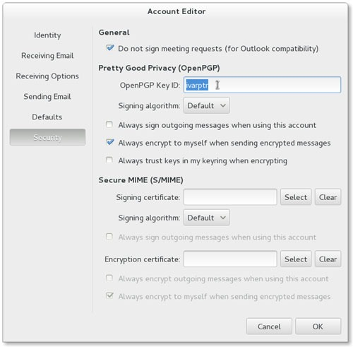

PGP (Pretty Good Privacy) 是由 Phil Zimmermann 于 1991 开发的一个用于数据加密和数字签名的程序，由于被广泛应用以至于后来形成一个开放的标准 OpenPGP，而 GnuPG 则是实现了该标准的一个开源免费程序，本文将会简单介绍如何使用 GnuPG 管理钥匙、加密解密文件和电子邮件、数字签名文件和电子邮件等内容。篇幅有点长，不过内容是很简单的，可以一步一步跟着来。@ivarptr
一、加密和数字签名的简单原理
首先每个人使用程序生成地球上惟一的一对钥匙，分别称为公钥和私钥。公钥用于加密，私钥用于解密。使用公钥加密过的信息只能由配对的私钥解开。
加密的过程是：如果A君要发送信息给B君，首先B君得把自己的公钥扔出来，A君得获取B君的公钥后加密信息并发送过去，B君收到（加过密的）信息使用自己的私钥解密就可以还原信息了。
而数字签名的过程稍微不同，信息是通过普通未加密方式发送信息给对方的，只是在每条信息后面都会附加一坨字符（名曰：签名），这个签名是由程序根据发送者的私钥以及信息内容计算得出，接收者使用发送者的公钥就可以核对信息有无被篡改。
二、获取并安装 GnuPG
GnuPG 是一个集钥匙管理、加密解密、数字签名于一身的工具，对于 Linux 系统，一般可以在系统本身的软件源找到 GnuPG，比如对于 ArchLinux 可以使用如下命令安装：
$ sudo pacman -S gnupg |
对于 Windows 系统可以下载免费开源程序包 GPG4Win，建议下载完全版，里面既包含了 GnuPG 命令行工具，又有图形钥匙管理工具 Kleopatra 和支持 GnuPG 的邮件客户端程序 Claws Mail。
三、生成钥匙对并发布公钥到网上
下面的讲解是基于命令行的，如果你比较喜欢图形工具，仍然建议先阅读完本章，因为图形工具的操作基本上跟下面的命令一一对应，而使用命令行讲解比较方便和容易理解。
1、生成钥匙对
$ gpg --gen-key |
使用上面的命令可以生成地球上惟一的一对钥匙对（注：命令行前的钱币符号是提示符，不用输入），运行后会询问你几个问题，首选是选择钥匙对的算法：
Please select what kind of key you want:
(1) RSA and RSA (default)
(2) DSA and Elgamal
(3) DSA (sign only)
(4) RSA (sign only)
Your selection?
默认选择 RSA 就可以了，输入1并回车。然后选择钥匙的长度：
RSA keys may be between 1024 and 4096 bits long.
What keysize do you want? (2048)
默认是 2048 位，直接回车。然后选择钥匙的有效期限：
Please specify how long the key should be valid.
0 = key does not expire
<n> = key expires in n days
<n>w = key expires in n weeks
<n>m = key expires in n months
<n>y = key expires in n years
Key is valid for? (0)
默认是永远有效的，如果你打算过一段时间就换一把新钥匙，可以在此输入期限，比如输入30表示有效期为30天，数字后面可以加上单位，比如30m表示30个月，30y表示30年。如果你不知道这步有什么作用，则直接回车。然后询问你确定吗？果断输入y并回车。
接下来是填写一些个人信息：
Real name: ivarptr
Email address: ivarptr@126.com
Comment: ivarptr on Twitter
第1行输入你的名字或者平常喜欢用的网名，比如我的是 ivarptr。
第2行输入你的email地址，比如我上面输入的是 ivarptr@126.com。
第3行输入一行备注，备注的作用是进一步标识自己的身份，比如你在姓名一行输入“小明”，为了让你的朋友更确切地知道是哪个小明，你可以输入“你隔壁家的小明”。
这三行信息用于产生一个标识（uid），用来标识这个钥匙对，在下面的命令行里，就可以用名字或者email地址来指定这个钥匙对。
虽然理论上这些信息是可以随意输入，而且也不会有人阻止你这么做，不过当别人拿到你的公钥时可能会搞不清谁对应谁，所以尽量使用别人分辨得清的名字和email地址。信息输入完之后再输入o并回车确定。
因为 GnuPG 的钥匙（包括公钥和私钥）是保存在本机上的，如果有人或者黑客进入你的计算机把你的私钥盗走了，那么你的身份就有可能被冒充的危险。所以接下来你需要输入一个密码用于保护你的私钥。这个密码最好选择一个稍微复杂一些的。
接下来就是等待程序生成钥匙对了，这个过程根可能需要几秒到几分钟时间，期间你可以去忙其他的事情。
2、查看本机钥匙信息
上一步完成后，可以使用如下命令查看本机上的公钥：
$ gpg --list-keys |
输出的结果跟下面的类似：
/home/ivarptr/.gnupg/pubring.gpg
——————————–
pub 2048R/72E75B05 2013-04-17 [expires: 2015-04-17]
uid ivarptr (ivarptr on Twitter) <ivarptr@126.com>
sub 2048R/74F0F5F9 2013-04-17 [expires: 2015-04-17]
从中我们可以看到刚才生成的钥匙对的公钥部分，其中：
- 72E75B05 是这个公钥的id，这个id跟uid都是用于标识这个公钥的，因为uid是用户随便输入的所以会有重复的情况，因此在某些需要明确指定公钥的命令，需要用id而不能用uid表示这个公钥。
- 2013-04-17 是生成这个公钥的时间，后面括号内的是有效期。
在实际应用中，因为要发送加密信息给你的朋友就需要对方的公钥，所以在本机上可能会有多个朋友的公钥，但私钥往往只有一个，也就是自己的私钥。使用下面命令可以查看本机上的私钥。
$ gpg –list-secret-keys
3、导出公钥
为了将自己的公钥扔给他人，你需要把公钥导出成为一个文件：
$ gpg -a --output key.public --export UID |
注：你要把其中的 UID 替换成你的名字或者email地址。
其中参数
- -a 表示输出文本文件格式。默认输出是二进制格式，因为二进制格式不太方便在网络（比如论坛或者博客）上展示，所以推荐文本格式。
- –output 指定输出文件的名字，你可以更改为其他名字。
- –export 表示执行输出公钥操作，后面的 UID 为你要输出的公钥的标识。
运行之后会在当前文件夹得到一个 key.public 文件，你可以使用文本编辑器或者 cat 命令查看里面的内容，大致如下：
$ cat key.public |
—–BEGIN PGP PUBLIC KEY BLOCK—–
Version: GnuPG v2.0.19 (GNU/Linux)…………
…………
—–END PGP PUBLIC KEY BLOCK—–
公钥导出之后，你可以通过各种方式把它发送给你的朋友，比如email或者聊天工具。而比较方便的是把公钥发布到公钥服务器。
4、把公钥发布到公钥服务器
公钥服务器用于储存和发布用户的公钥以便相互交流，这些服务都是免费的，GnuPG 默认的公钥服务器是 keys.gnupg.net，你可以在这里找到更多的服务器。你也可以使用浏览器打开它们的网站，然后把你的公钥复制粘贴上去。当然最直接的是通过命令行：
$ gpg --keyserver keys.gnupg.net --send-key ID |
注：你要把其中的 ID 替换成你公钥的id。
其中参数：
- –keyserver 用于指定公钥服务器，没有特殊需求的话是可以省略这个参数的，不过有些 GnuPG 版本可能需要指定这个参数才能正常工作。
- –send-key 用于指定待发布的公钥的id。
好了，至此你已经学会生成钥匙对以及发布公钥了。
四、导入他人的公钥，加密一个文件
下面我们来做个试验，尝试导入作者的公钥，然后使用该公钥加密一个文件。通过这个试验就可以学会怎样获取他人的公钥并用之加密信息。
1、在公钥服务器搜索作者的公钥并导入到本机
使用如下的命令可以搜索到我的公钥：
$ gpg --keyserver keys.gnupg.net --search-key ivarptr |
参数 –search-key 用于指定搜索关键字，可以是uid的名字或者email地址部分。结果大致如下：
gpg: searching for “ivarptr” from hkp server keys.gnupg.net
(1) ivarptr (ivarptr on Twitter) <ivarptr@126.com>
2048 bit RSA key 72E75B05, created: 2013-04-17
Keys 1-1 of 1 for “ivarptr”. Enter number(s), N)ext, or Q)uit >
如果有重名的情况，这里会列出多条记录。你可以输入n并回车把搜索结果浏览个遍。当你看到id和uid都跟你要找的那个吻合时，输入搜索结果前面显示的数字就可以把相应的公钥下载到本机。如上面的搜索结果，按数字1并回车就可以把我的公钥导入到本机。输入q并回车可退出搜索。
注：服务 keys.gnupg.net 背后是一组服务器，它们之间的信息同步需要一定的时间，如果你刚刚提交了自己的公钥，可能不会立即搜索就有结果，只要过一段时间（大概1小时）就好了。如果你用的是普通公钥服务器，比如 pgp.mit.edu 则不会有这个问题。
如果你确切知道要导入的公钥的id，也可以跳过搜索这步而直接使用如下的命令导入：
$ gpg --keyserver keys.gnupg.net --recv-key 72E75B05 |
其中 72E75B05 是我公钥的id，如果把它替换成你朋友的公钥id则为导入你朋友的公钥。
导入公钥还有另一种方法：如果我把公钥文件直接发送了给你，你也可以跳过公钥服务器。下面假设我的公钥文件 key.public 已发送给你，你运行如下命令就可以导入我的公钥了：
$ gpg --import key.public |
2、核对公钥的指纹值并签收公钥
把对方的公钥导入到本机后，就已经可以用它来加密信息或者用于校验我的数字签名。不过这样每次操作时都会提示公钥不可信，因为虽然你导入了我的公钥，但存在导入冒充者的公钥的可能性。所以你需要进一步跟我核对公钥是否正确，然后签收（sign key）它。
因为公钥有可能出现冒牌货，所以每个公钥里都加入了指纹值，使用下面命令可以查看指纹值：
$ gpg --fingerprint |
列出的结果应该有一组如下所示：
pub 2048R/72E75B05 2013-04-17 [expires: 2015-04-17]
Key fingerprint = 0D24 0A94 A86C 7B83 3F7C 200E 1CAF 0CB0 72E7 5B05
uid ivarptr (ivarptr on Twitter) <ivarptr@126.com>
sub 2048R/74F0F5F9 2013-04-17 [expires: 2015-04-17]
其中 “0D24 0A94 A86C 7B83 3F7C 200E 1CAF 0CB0 72E7 5B05” 就是这个公钥的指纹值。你应该通过打电话或者聊天工具等方式询问对方并核对指纹值是否一致，如果吻合的话就说明你取得的是真货了。
注：因为我不可能公布我的电话 所以如果你看到取回来的公钥指纹值跟我博客这篇文章的一致，就可以当作是真货了。当然如果是实际的朋友，一定要亲口核对的。
确定取得的公钥是真货之后，使用如下命令对这个公钥进行签收（sign key）：
$ gpg --sign-key ivarptr |
运行上面的命令之后它提示你再确认一次指纹值，输入y并按回车确定。
提示，如果发现获取回来的是冒牌货，可以使用如下的命令删除它：
$ gpg --delete-keys ivarptr |
3、加密一个文件
使用文本编辑器（比如记事本或者 vim、echo）创建一个名为 message.txt 的文件，里面写上任意一行文字，然后使用如下的命令加密它：
$ gpg -a --output message-ciper.txt -r ivarptr@126.com -e message.txt |
其中参数：
- -a 表示输出文本文件格式。
- –output 指定输出（即加密后）的文件名。
- -r 指定信息的接收者（recipient）公钥的uid，可以是名字也可以是email地址。
- -e 表示这次要执行的是加密（encrypt）操作。
执行完毕之后会在当前文件夹产生文件 message-ciper.txt，这个就是被加密之后的文件。
注：如果你要加密的是一个二进制文件，则可以省略 -a 参数，这样产生的加密文件的体积会小一些。
小练习：现在你可以用 email 把加密后的文件寄给我，或者把里面的内容复制然后粘贴到我博客的评论里，接下来我会解密然后回复你。如果你希望我也以加密的形式回复你，记得同时告诉我你的公钥 id（以及公钥服务器地址，假如不是用默认服务器的话）。
4、解密一个文件
现在假设我已经收到你寄过来的加密文件 message-ciper.txt，使用如下的命令解密：
$ gpg --output message-plain.txt -d message-ciper.txt |
其中参数：
- –output 指定输出（即解密后）的文件名。
- -d 表示这次要执行的是解密（decrypt）操作。
GnuPG 程序会自动使用我的私钥来解密信息，最后得到一个跟原始内容一样的文本文件 message-plain.txt。
至此，你已经学会使用 GnuPG 加密解密文件了。
提示1：导入公钥、核对公钥的指纹值、签名公钥这些操作你只需做一次，以后就可以重复多次使用该公钥加密信息并发送给对方。
提示2：如果你想自己体会整个加密和解密过程，可以用自己的公钥加密信息，然后用自己的私钥解密，只需把上面第3步的命令当中的接收者uid（ivarptr@126.com）更改为自己的uid即可。
五、数字签名一个文件
下面我会签名一个文件，你可以尝试检验一下这个签名。
1、数字签名一个文件的方法A
现在我有一个文本文件 message.txt，使用如下命令即可对它进行数字签名：
$ gpg -a -b message.txt |
其中参数
- -a 表示输出文本文件格式。
- -b 表示以生成独立的签名文件的方式进行签名。
命令执行完毕之后，会在当前文件夹里产生一个 message.txt.asc 的文件，这个文件即签名。现在我应该把原信息文件 message.txt 连同签名文件 message.txt.asc 一起寄给你，然后你使用如下命令检验：
$ gpg --verify message.txt.asc |
如无意外，应该会看到如下两行：
gpg: Signature made Thu 18 Apr 2013 12:35:00 AM CST using RSA key ID 72E75B05
gpg: Good signature from “ivarptr (ivarptr on Twitter) <ivarptr@126.com>”
其中最重要的是 “Good signature” 字样，表示通过检验，否则表示没通过检验（即意味着原信息的内容被篡改或者原信息不是我发出的）。
提示：如果你有多个私钥，在签名时需要加上参数 -u 指定私钥的 uid。
2、数字签名一个文件的方法B
如果不想生成一个独立的签名文件，则还可以用如下的命令进行签名：
$ gpg -a --clearsign message.txt |
跟方法A不同的地方是用参数 –clearsign 替代了参数 -b。参数 clearsign 表示将签名和原信息合并在一起，并生成一个新文件。
命令运行后同样会生成一个文件 message.txt.asc，内容如下：
—–BEGIN PGP SIGNED MESSAGE—–
Hash: SHA1hello world, my key id is 72E75B05, finger is 0D24 0A94……5B05, check it
out.
—–BEGIN PGP SIGNATURE—–
Version: GnuPG v2.0.19 (GNU/Linux)iQEcBAEBAgAGBQJRbuXuAAoJEByvDLBy51sFaY8IAKKnXX2JGI51mzYSakqvhNnr
iV2JLvokMkvyDuJQGeNDMim5W7P0/df+G4oO45B9b0iFx6DSQwZGeBjEGCXvCURa
uU2fdEqjaSarlrs0d4R1ihol8rCxkZwBYBBPjcvDkVwoVJJYS0zc3OYzMvWhb8mk
Q72wQ0obX5LedUVrauG9OLkvq9aBKONr6Xlkldd133v3gb/Wzjf71CLYcRoJDpze
2XBSkrGS0UxRp3WixJJK8xyfDfI9VHBaXEndCkgQ+Mpfq9nV5XAm3MKcPjlENq4g
xGywHRpnwpW8N22VE6ZFEUFlXrh5C8hZfGaG/EcT21PeAbZYH8RcnYTbJ+s2nZ4=
=lhd6
—–END PGP SIGNATURE—–
你可以复制这段文字然后保存到一个文件里，如 abc.txt，然后使用如下命令进行检验：
$ gpg --verify abc.txt |
使用如下命令可以把原始信息提取出来：
$ gpg --output message-original.txt -d abc.txt |
六、邮件加密和数字签名
如果你只是希望 GnuPG 用于邮件加密和数字签名，上面的命令是可以完全不用的，因为钥匙的管理工作（如生成钥匙对、导出导入、钥匙签名等）都可以使用图形工具完成，比如 KDE 的 Kleopatra 和 Gnome 下的 seahorse。至于邮件内容的加密解密和数字签名以及校验，一般比较完善的邮件客户端工具都内置集成 GnuPG 的功能，比如 Evolution、KMail、Mozilla Thunderbird，谷歌告诉我 Windows 下的 Outlook 和 Live Mail 也支持但我没有试验过，如果不行那么使用 GPG4Win 附带的 Claws Mail 就可以了。下面我以 Evolution 为例简单介绍如何设置。
其实关键的设置只有一步，就是关联你的 email 帐号和私钥的id/uid。在 Evolution 的帐号属性里，转到 Security 页，在 OpenPGP Key Id 里输入你的私钥id或者uid即可。如下图：

[图1]
然后在写email时点击菜单的 Options 勾选 OpenPGP 签名或者加密，然后再发送即可。如下图：
加密信息及数字签名教程-月光博客_files/Image [1].jpg)
[图2]
对方收到邮件时，Evolution 会自动检验签名或者自动解密邮件内容。
小练习：尝试用邮件客户端发送一封签名或者加密过的邮件给我。
提示1：在签名或者解密时，有可能会弹出一个窗口要求你输入一个密码，这个密码是指保护私钥所设置的密码，也就是生成钥匙对时设置的密码。
提示2：用网易邮箱收取签过名的邮件时可能会显示检验失败，这是因为网易邮箱会在邮件末尾添加附件的下载地址，相当于更改了邮件的原始内容，所以签名检验失败是肯定的。
七、GnuPG 更多的使用方法
请尽量阅读 GnuPG 官方的文档：
- 迷你Howto教程：http://www.dewinter.com/gnupg_howto/english/GPGMiniHowto.html
- 迷你Howto教程（中文版）： http://www.gnupg.org/howtos/zh/index.html
- The GNU Privacy Handbook http://www.gnupg.org/gph/en/manual.html
还有一些本文未提到但会用得上的命令：
- Quick’n easy gpg cheatsheet http://irtfweb.ifa.hawaii.edu/~lockhart/gpg/
文本完，如有问题可以 @ivarptr 或者在评论中留言。谢谢！
来源：投稿，原文链接。